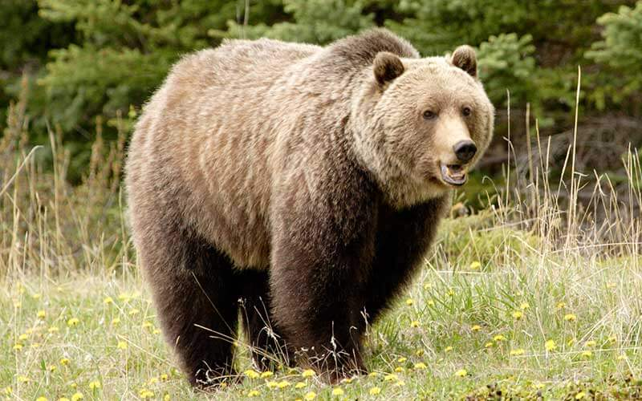

¿Qué son los Animales Extintos?
A lo largo de la historia ha habido no miles, sino millones y millones de especies que se han ido extinguiendo debido a que el último ejemplar de cada uno de estos animales muere. Por lo tanto, la extinción de los animales se ha convertido en una gran certeza ya que, cuando no hay otro integrante con el que estos animales puedan reproducirse, dan paso a una nueva generación de su especie.
Muchos de los animales que hoy se encuentran extintos tuvieron características y un aspecto que los hizo convertirse en unos animales completamente increíbles.
Asimismo, cuando una especie de animales se encuentra funcionalmente extinta es cuando solamente existen algunos miembros de esa especie y a su vez no pueden reproducirse debido a diversos motivos como lo son por estados de salud, mala distribución de los miembros supervivientes pertenecientes a la especie, edad elevada y la no existencia de ambos sexos tanto dentro de la especie.

¿Qué reconocemos como animales extintos?
Los animales extintos se reconocen ya que, los mismos existieron muchos millones de años atrás, es decir, desde los comienzos de la vida en la Tierra. Sin embargo, hoy en día también se han reconocido muchos animales que se han extinguido debido a que dentro de su especie no cuentan con otros miembros para reproducirse y así poder continuar con un nuevo grupo que permite que la especie pueda seguir viva.
Entre los animales extintos se encuentran todos aquellos ejemplares que no dejaron ningún descendiente o no tienen formas de cómo reproducirse para la especie no se extinga por completo. Del mismo modo, son muchas las especies que se han extinguido durante el pasar de los años, aunque hoy en día se encuentran muchas especies que están peligro de extinguirse de la faz de la tierra.
¿Cuál es la historia de los animales extintos?
La historia de los animales extintos empieza específicamente alrededor de millones de años donde la primera especie de animales que se extinguieron en la tierra fueron los dinosaurios.
La extinción de los animales es un hecho completamente natural, ya que por lo general cuando una especie desaparece es porque otros ejemplares van a ocupar su lugar, debido a que esta nueva especie cuenta con características que le permitirán poder adaptarse mejor al ambiente en el que habitarán.
Por otro lado, el hecho de que los animales se extingan ha ido aumentando mucho por un factor externo, que son los humanos debido a que los mismos han llevado a cabo durante todos estos años algunas actitudes como lo son la contaminación, la caza, el aumento de la población, la tala de árboles que provoca deforestaciones en el ambiente y entre otros factores que han provocado que las especies poco a poco se vayan extinguiendo de la tierra.
No obstante, la extinción de los animales siempre ha ocurrido, pero la desaparición de los mismos con el pasar del tiempo ha ido aumentando mucho más. Entre los animales que se encuentran extintos están el delfín de aleta blanca y el león del cabo.
Estos animales se han extinguido debido al comportamiento que tiene el ser humano. Además, así como esos animales hay muchas otras especies que han desaparecido tanto de manera natural, como por las actitudes que tienen los humanos acabando así con la existencia de los mismos.
Algunos tipos de animales que se han extinguido:
Mamíferos extintos:
1- Tigre de Tasmania
2- Smilodon
3- Rinoceronte Lanudo
4- Rinoceronte Negro
5- Quagga o Cebra de las llanuras
6- Oso grizzly mexicano
7- Mamut Lanudo
8- Foca Monje del Caribe
9- Bucardo
10- Bilby Menor
11- Alce Irlandes
Aves extintas:
1- Zampullin
2- El Dodo
3- Canario Ostrero
4- Alca Gigante
Animales acuáticos extistos:
1- León Marino Japonés
2- Delfín de agua dulce
3- Dilfín Baiji
Animales extintos que la ciencia quiere resucitar:
En la actualidad existen diversos investigadores que quieren resucitar a algunos animales extintos usando la ciencia. Asimismo, son muchos los científicos que quieren arreglar los crímenes que ha cometido la humanidad, devolviendo así a la vida a distintas especies de animales ya extintos.
Los científicos tienen como objetivo y finalidad retomar la biodiversidad que ha ido mermando con el pasar de los años. Sin embargo, gracias a la ingeniería genética pueden ser muchos los animales que podrían volver a la vida.
Del mismo modo, los científicos que desean devolver a la vida a los animales extintos usando la ciencia, han explicado que ninguna especie se encuentra completamente extinta si se conserva una parte de su ADN de alguna manera. Por ello, entre los animales extintos que la ciencia quiere devolver a la vida están:
1- El dodo
2- El pájaro carpintero imperial
3- El rinoceronte lanudo
4- El bucardo
5- La cebra de las llanuras
6- El delfín de agua dulce
7- La foca monje del Caribe
8- El tigre de Tasmania
9- El alca gigante
10- Rheobatrachus silus